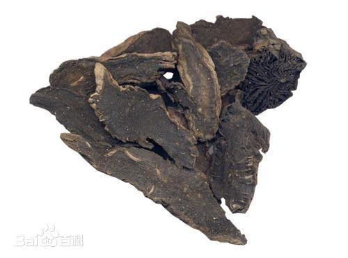

人参
被誉为“百草之王”，常用于补充体力，增强免疫力。
黄芪
具有补气固表的作用，常用于提高免疫力。


茯苓
渗湿利水，健脾安神，用于小便不利、心神不宁等。
白芍
养血调经，用于血虚引起的月经不调、腹痛等。
黄连
清热燥湿，泻火解毒，用于湿热泻痢、口舌生疮等。

板蓝根
清热解毒，凉血利咽，常用于感冒发热、咽喉肿痛等。
葛根
解表退热，生津止渴，用于外感发热、头痛等。

丹参
活血调经，凉血消痈，用于血瘀经闭、疮疡肿痛等。


天麻
息风止痉，平抑肝阳，祛风通络。用于小儿惊风，癫痫抽搐，破伤风，头痛眩晕，手足不遂，肢体麻木，风湿痹痛。
阿胶
补血滋阴，润燥，止血。用于血虚萎黄，眩晕心悸，心烦不眠，肺燥咳嗽，吐血，衄血，便血，崩漏，妊娠胎漏。

巴戟天
补肾阳，强筋骨，祛风湿。用于阳痿遗精，宫冷不孕，月经不调，少腹冷痛，风湿痹痛，筋骨痿软。
肉苁蓉
补肾阳，益精血，润肠通便。用于阳痿，不孕，腰膝痿软，筋骨无力，肠燥便秘。
玉竹
养阴润燥，生津止渴。用于肺阴不足，燥热咳嗽，胃阴不足，内热消渴。
石斛
益胃生津，滋阴清热。用于阴伤津亏，口干烦渴，食少干呕，病后虚热，目暗不明。
南沙参
养阴清肺，益胃生津，补气，化痰。用于肺热燥咳，阴虚劳嗽，气阴两伤之舌干口渴。
百合
养阴润肺，清心安神。用于阴虚燥咳，劳嗽咯血，虚烦惊悸，失眠多梦，精神恍惚。
紫菀
润肺下气，化痰止咳。用于痰多喘咳，新久咳嗽，劳嗽咳血。

川贝母
清热化痰，润肺止咳，散结消肿。用于虚劳咳嗽，痰热咳嗽，瘰疬疮肿，乳痈，肺痈。

玄参
清热凉血，滋阴降火，解毒散结。用于热病伤阴，舌绛烦渴，温毒发斑，津伤便秘，骨蒸劳嗽，目赤，咽痛，白喉，瘰疬，痈肿疮毒。
牛膝
活血通经，利尿通淋，引血下行，补肝肾，强筋骨。用于经闭，痛经，腰膝酸痛，筋骨无力，淋证，水肿，头痛，眩晕，牙痛，口舌生疮，吐血，衄血。
附子
回阳救逆，补火助阳，散寒止痛。用于亡阳证，阳虚证，寒痹证。
肉桂
补火助阳，散寒止痛，温经通脉，引火归原。用于阳痿，宫冷，腹痛，寒疝，腰痛，胸痹，阴疽，闭经，痛经，虚阳上浮。
牡丹皮
清热凉血，活血祛瘀。用于温毒发斑，血热吐衄，痈肿疮毒，跌仆伤痛，瘀血肿痛，风湿热痹，经闭痛经，腹痛，肠痈，目赤，牙痛。
泽泻
利水渗湿，泄热。用于小便不利，水肿胀满，泄泻尿少，痰饮眩晕，热淋涩痛，高脂血症。
地黄
清热凉血，养阴生津。用于热入营血，温毒发斑，吐血衄血，热病伤阴，舌绛烦渴，津伤便秘，阴虚发热，骨蒸劳嗽，内热消渴。
香附
疏肝解郁，调经止痛，理气调中。用于肝郁气滞，胸、胁、脘腹胀痛，消化不良，月经不调，经闭痛经，寒疝腹痛，乳房胀痛。
藿香
芳香化湿，和中止呕，发表解暑。用于湿阻中焦，脘痞呕吐，暑湿表证，湿温初起，发热倦怠，胸闷不舒，寒湿闭暑，腹痛吐泻，鼻渊头痛。
地骨皮
凉血除蒸，清肺降火。用于阴虚潮热，骨蒸盗汗，肺热咳嗽，咯血，衄血，内热消渴。